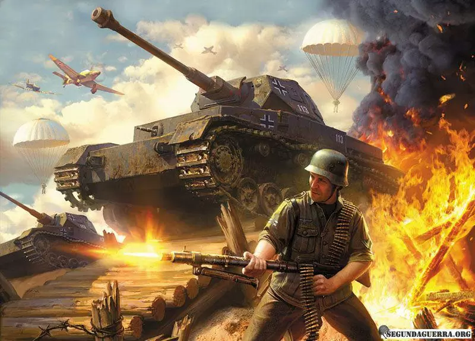

O quiz da segunda guerra mundial
Desistir, não é uma opção campeão!
Você errou, que tal tentar outra vez?
Na segunda guerra mundial qual foi o pais do aliados que mais produziu tanques de guerra
Qual foi a tática que deu sucesso para os alemaes no inicio da segunda guerra
Qual foi o maior general de toda a segunda guerra mundial
Qual foi o melhor tanque e o mais temido da segunda guerra mundial
Parabéns seu nerd de história!